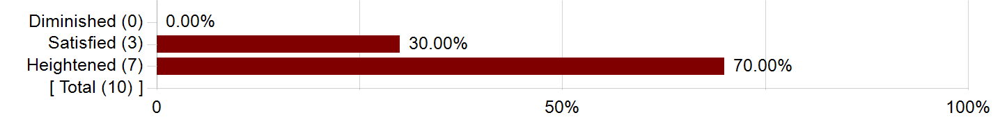
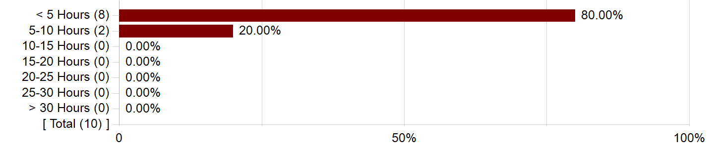
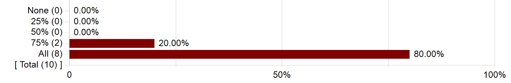

Report Comments
Opinions expressed in these evaluations are those of students enrolled in the specific course and do not represent the University.
- Creation Date
- Tuesday, June 23, 2020

The Course
What are the most important things that you learned in this course? Please reflect on the knowledge and skills you gained.
| Comments |
|---|
| In the arts, where there is feeling there is meaning! |
| Veeder has an extremely strange (if we're being charitable, we would call it "distinctive") approach to reading. He is obsessed with ferreting out what he calls "buried narratives" in the story; this often hinges on the supposed implausibility of plot events or other types of information. As a case in point, in the Carver story we read, the narrator relates how he once fell down a well as a child; we spent about 30 minutes of class time discussing why this couldn't have "actually happened," on grounds that had absolutely nothing to do with anything about the story. He also thinks Faulkner's "A Rose For Emily" is a story about cannibalism (yes, really). I would be lying if I said I didn't find this approach to reading irritating in the extreme. His insistence on reading the text against the grain destroys the text itself in this way, it exemplifies the worst tendency in "critical theory" approaches to literature, without any of the theoretical sophistication or political value. The one positive thing about his approach is that it hinges on a very granular approach to language, which I appreciated ?but to be honest, this is a pretty basic skill, and the purposes to which he put it were pretty ridiculous. Avoid this class. |
| #NAME? |
| How to close read |
| I LOVED every story and the analysis of them |
| Close reading, building an argument for a paper. |
| How to read, analyze, think about texts; how to discover Oedipal triangles and rectangles and Freudian relationships |
| Close-reading. Genuinely incredible insights into close-reading, specifically of narrative fiction. |
| Close analysis - making every word count. |
Describe how aspects of this course (lectures, discussions, labs, assignments, etc.) contributed to your learning.
| Comments |
|---|
| Professor Veeder's lectures were great! |
| #NAME? |
| Loved Veeder's structuring the class as each class = one sample argument for a paper |
| discussing how to close read in class |
| Having such a wealth of short stories to read, and having an expert there to help analyze was awesome enough |
| Veeder's lectures qua discussions were insightful and instructive. |
| I feel like I can write in almost any other class by focusing on 3 key words in a given paragraph. |
| Mean | Median | N/A | Strongly Disagree | Disagree | Neutral | Agree | Strongly Agree | |
|---|---|---|---|---|---|---|---|---|
| This course challenged me intellectually. | 4.60 | 5.00 | 0.00% | 0.00% | 0.00% | 0.00% | 40.00% | 60.00% |
| I understood the purpose of this course and what I was expected to gain from it. | 4.40 | 5.00 | 0.00% | 0.00% | 0.00% | 20.00% | 20.00% | 60.00% |
| I understood the standards for success on assignments. | 4.20 | 4.00 | 0.00% | 0.00% | 0.00% | 20.00% | 40.00% | 40.00% |
| Class time enhanced my ability to succeed in graded assignments. | 4.50 | 5.00 | 0.00% | 0.00% | 0.00% | 10.00% | 30.00% | 60.00% |
| I received feedback on my performance that helped me improve subsequent work. | 4.80 | 5.00 | 0.00% | 0.00% | 0.00% | 0.00% | 20.00% | 80.00% |
| My work was evaluated fairly. | 4.20 | 4.00 | 0.00% | 0.00% | 10.00% | 0.00% | 50.00% | 40.00% |
| I felt respected in this class. | 4.60 | 5.00 | 0.00% | 0.00% | 0.00% | 0.00% | 40.00% | 60.00% |
| Overall, this was an excellent course. | 4.40 | 5.00 | 0.00% | 0.00% | 10.00% | 0.00% | 30.00% | 60.00% |
Additional Comments about this course:
| Comments |
|---|
| A little hard of a grader but an amazing professor who was always ready to listen to students and help them learn! |
| I would note that the assignments can be graded fairly harshly. |
| Too many students in the class - did not feel like a seminar. As a result, only a handful of students seemed to contribute to discussion. |
I would recommend this course to highly motivated and well-prepared students
I would recommend this course to highly motivated and well-prepared students
I would recommend this course to anyone interested in the topic
I would recommend this course to anyone interested in the topic
The Instructor
Thinking about your time in class, what aspect of the instructor's teaching contributed most to your learning?
| Comments |
|---|
| Close reading! |
| #NAME? |
| He was clearly engaged and passionate and knowledgable about what he was teaching. |
| SO enthusiastic and knowledgable. |
| Veeder is just an expert. He can read a text or evaluate a paper fully and flawlessly. He's not your typical UChicago professor - he lived through and was a part of some of the literary movements we studied in class. His anecdotes, personal and historical, are wonderful. And most of all, despite his repute, he cares about his students, their learning, and their wellbeing more than ANY professor I've had here. He gives himself completely to his students. A wonderful human being and a true classic. |
| Just kinda crazy knowledgeable and insightful. Great speaker, great lecturer. |
| Great personality and energy. |
What could she/he modify to help you learn more?
| Comments |
|---|
| Nothing! |
| -he sometimes had some very "out there" ideas about the texts, that I wasn't sure were always supported with enough evidence, though that did make things more entertaining, I was sometimes frustrated |
| nothing! |
| I personally didn't see a few of Veeder's theories - Emily's cannibalism comes to mind - and I think many of the interpretations, especially Oedipal and Freudian, are stretches. You definitely have to be tolerant of absurdity in this class. On another topic, we always went past class time, and I think A) having a more condensed agenda, B) restraining some of the discussion would help end class on time. |
| Possibly taking a moment at the beginning of one of the lectures to actually explain how Freudian theory interacts with texts?? is the claim that Freud was right? To what extent is the claim that Freud was right? |
| I think in previous years there were individual writing tutorials? I would bring this back. |
The Instructor
| Mean | Median | N/A | Strongly Disagree | Disagree | Neutral | Agree | Strongly Agree | |
|---|---|---|---|---|---|---|---|---|
| Organized the course clearly. | 4.50 | 5.00 | 0.00% | 0.00% | 0.00% | 10.00% | 30.00% | 60.00% |
| Presented lectures that enhanced your understanding. | 4.50 | 5.00 | 0.00% | 0.00% | 10.00% | 0.00% | 20.00% | 70.00% |
| Facilitated discussions that were engaging and useful. | 4.40 | 5.00 | 0.00% | 0.00% | 0.00% | 20.00% | 20.00% | 60.00% |
| Stimulated your interest in the core ideas of the course. | 4.60 | 5.00 | 0.00% | 0.00% | 0.00% | 0.00% | 40.00% | 60.00% |
| Challenged you to learn. | 4.70 | 5.00 | 0.00% | 0.00% | 0.00% | 0.00% | 30.00% | 70.00% |
| Helped you gain significant learning from the course content. | 4.50 | 5.00 | 0.00% | 0.00% | 10.00% | 0.00% | 20.00% | 70.00% |
| Was available and helpful outside of class. | 4.67 | 5.00 | 10.00% | 0.00% | 0.00% | 0.00% | 30.00% | 60.00% |
| Motivated you to think independently. | 4.40 | 5.00 | 0.00% | 0.00% | 10.00% | 0.00% | 30.00% | 60.00% |
| Worked to create an inclusive and welcoming environment. | 4.70 | 5.00 | 0.00% | 0.00% | 0.00% | 0.00% | 30.00% | 70.00% |
| Overall, this instructor made a significant contribution to your learning. | 4.40 | 5.00 | 0.00% | 0.00% | 10.00% | 0.00% | 30.00% | 60.00% |
The Teaching Assistant, Course Assistant, Intern
Did this class include instruction by a TA, CA or Intern?
Did this class include instruction by a TA, CA or Intern?
TA/CA or Intern
| Mean | Median | N/A | Strongly Disagree | Disagree | Neutral | Agree | Strongly Agree | |
|---|---|---|---|---|---|---|---|---|
| Facilitated discussions that supported your learning. | 5.00 | 5.00 | 66.67% | 0.00% | 0.00% | 0.00% | 0.00% | 33.33% |
| Gave you useful feedback on your work. | 5.00 | 5.00 | 66.67% | 0.00% | 0.00% | 0.00% | 0.00% | 33.33% |
| Stimulated your interest in the core ideas of the course. | 5.00 | 5.00 | 66.67% | 0.00% | 0.00% | 0.00% | 0.00% | 33.33% |
| Challenged you to learn. | 5.00 | 5.00 | 66.67% | 0.00% | 0.00% | 0.00% | 0.00% | 33.33% |
| Helped you succeed in the class. | 5.00 | 5.00 | 66.67% | 0.00% | 0.00% | 0.00% | 0.00% | 33.33% |
| Was available and helpful outside of class. | 5.00 | 5.00 | 66.67% | 0.00% | 0.00% | 0.00% | 0.00% | 33.33% |
| Overall, the TA/CA made a significant contribution to your learning. | 5.00 | 5.00 | 66.67% | 0.00% | 0.00% | 0.00% | 0.00% | 33.33% |
Additional Course Elements
Did this course include special design elements (labs, field trips, extra sessions, writing seminars)?
Did this course include special design elements (labs, field trips, extra sessions, writing seminars)?
How much did the following elements of the course contribute to your learning gains?
| Mean | Median | N/A | No Gain | A Little Gain | Moderate Gain | Good Gain | Great Gain | |
|---|---|---|---|---|---|---|---|---|
| Laboratory Experience | N/A | N/A | 100.00% | 0.00% | 0.00% | 0.00% | 0.00% | 0.00% |
| Field Trips | N/A | N/A | 100.00% | 0.00% | 0.00% | 0.00% | 0.00% | 0.00% |
| Library Sessions | N/A | N/A | 100.00% | 0.00% | 0.00% | 0.00% | 0.00% | 0.00% |
| Review sessions | N/A | N/A | 100.00% | 0.00% | 0.00% | 0.00% | 0.00% | 0.00% |
| Writing Seminars | 5.00 | 5.00 | 50.00% | 0.00% | 0.00% | 0.00% | 0.00% | 50.00% |
Other course elements not mentioned above:
| Comments |
|---|
| Lecture on building arguments was helpful, but also made me a lot more nervous about writing the final paper |
Student Information
Is this class a requirement of some sort?
Is this class a requirement of some sort?
Prior to starting the class, my interest level was?
Prior to starting the class, my interest level was?

Now that the course is over, my interest is?
Now that the course is over, my interest is?

Why, primarily, did you take this course over others?
How many hours per week outside of attending required sessions did you spend on this course?
How many hours per week outside of attending required sessions did you spend on this course?

What proportion of classes did you attend?
What proportion of classes did you attend?

Please comment on the level of difficulty of the course relative to your background and experience.
| Comments |
|---|
| The course isn't incredibly difficult in terms of the assignments you need to complete, but they tend to be graded fairly harshly, especially the midterm. |
| No busy work. Just two essays - I appreciate it. |